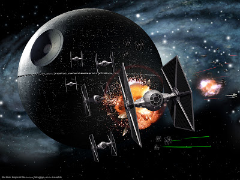
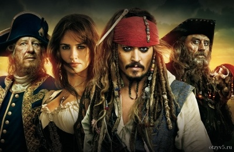
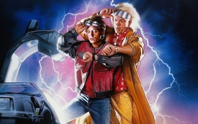

Мои любимые жанры книг
- Детективы
- Научная фантастика
- Антиутопии
- Фэнтези
Мои любимые фильмы
- Звёздные войны
- Пираты карибского моря
- Матрица
- Назад в будущее
Где нет опасности, не может быть и славы.
—Roy Jones
Степанов Владимир
Меня зовут Степанов Владимир. Я живу в городе Йошкар-Ола, учусь в ПГТУ на специальности Программная инженерия.
Где я учился до того как поступил на ФИиВТ
Я учился в лицее №28. С 4-ого до 9-ого классов я учился на профиле ИКТ(информационные и коммуникационные технологии). В 10-ом классе я перешёл на профиль физмат. Я получил хорошие баллы на ЕГЭ, особенно по физике, и решил дальше учиться на ПС.
Напиши мне
→
Любимые фильмы

Звёздные войны
Культовая фантастическая франшиза в жанре космической оперы, включающая в себя 9 кинофильмов, а также анимационные сериалы, мультфильмы, телефильмы, книги, комиксы, видеоигры, игрушки и прочие произведения, созданные в рамках единой фантастической Вселенной «Звёздных войн», задуманной и реализованной американским режиссёром Джорджем Лукасом в конце 1970-х годов и позднее расширенной.

Пираты Карибского моря
Серия приключенческих фильмов о пиратах в Карибском море. Главный герой на протяжении всех частей — пиратский капитан Джек Воробей (Джонни Депп). Центральные персонажи — пиратский/британский капитан Гектор Барбосса (Джеффри Раш), пиратский боцман Джошами Гиббс (Кевин МакНелли), кузнец и сын пирата Уилл Тёрнер (Орландо Блум), дочь губернатора Элизабет Суонн (Кира Найтли).
Матрица
Американский научно-фантастический боевик, снятый Эндрю и Лоуренсом Вачовски. Фильм изображает будущее, в котором реальность, существующая для большинства людей, есть в действительности симуляция типа «мозг в колбе», созданная разумными машинами, чтобы подчинить и усмирить человеческое население, в то время как тепло и электрическая активность их тел используются машинами в качестве источника энергии. Узнав об этом, хакер по кличке Нео оказывается втянут в повстанческую борьбу против машин, в которую также вовлечены другие люди, освободившиеся из «мира снов» и выбравшиеся в реальность.

Назад в будущее
Научно-фантастический фильм в трёх частях о путешествиях во времени, описывающий альтернативные реальности маленького американского городка Хилл-Вэлли и нескольких проживающих там семей. По сюжету доктор Эмметт Браун 30 лет изобретал машину времени и, наконец, в 1985 году он закончил работу над ней, установив энергетический флюксуатор (в других переводах — потоковый накопитель и поточный конденсатор) в автомобиле DeLorean DMC-12.